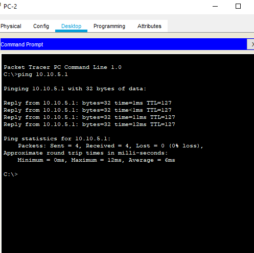 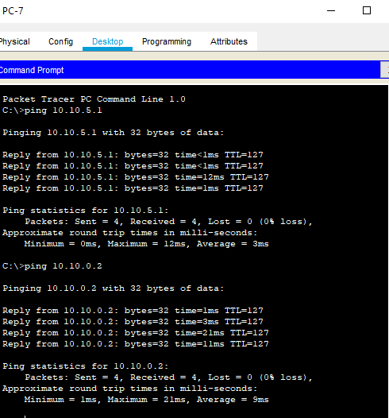

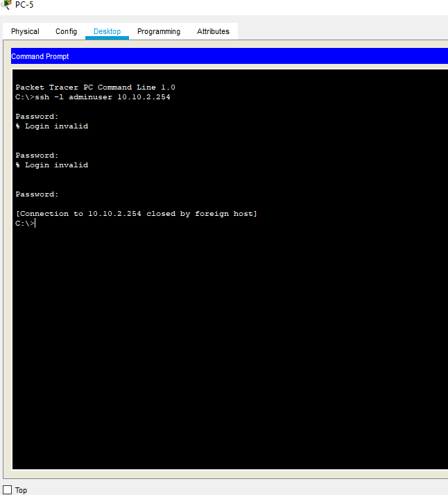 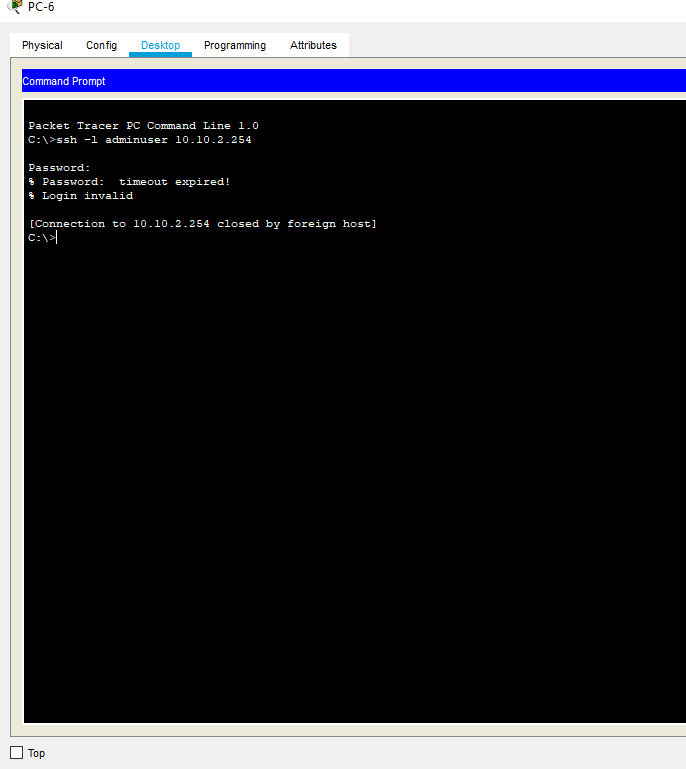 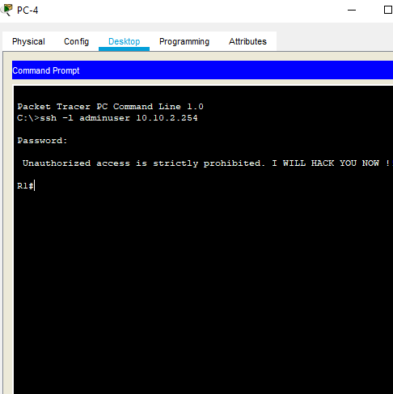
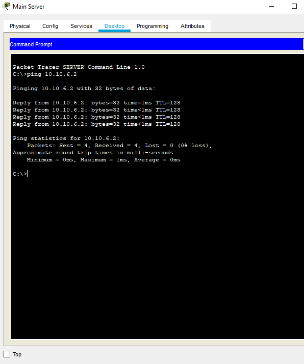 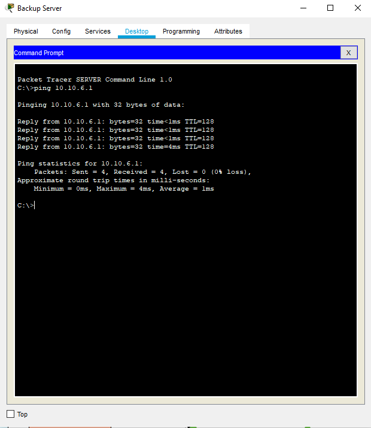 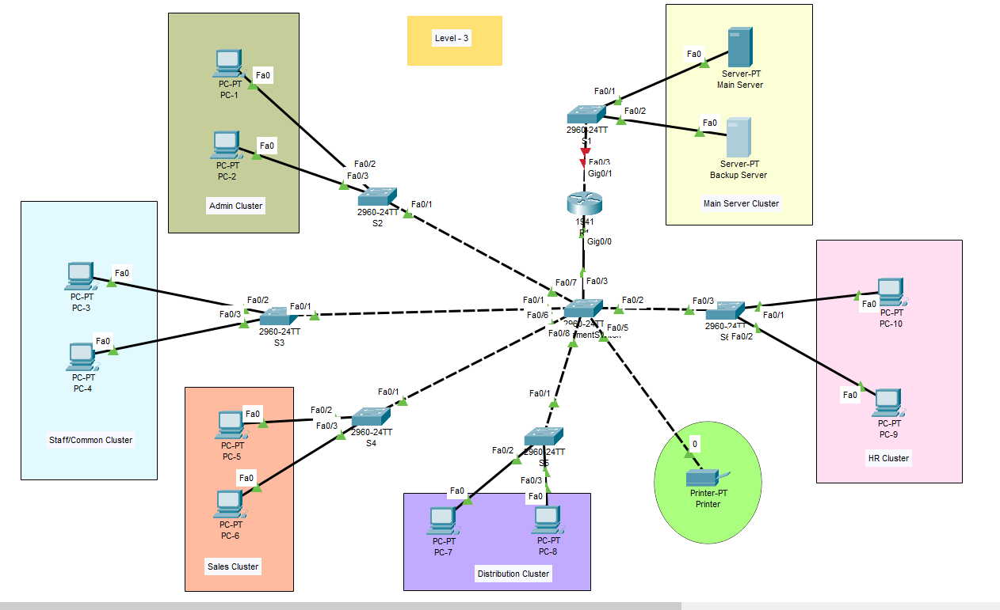
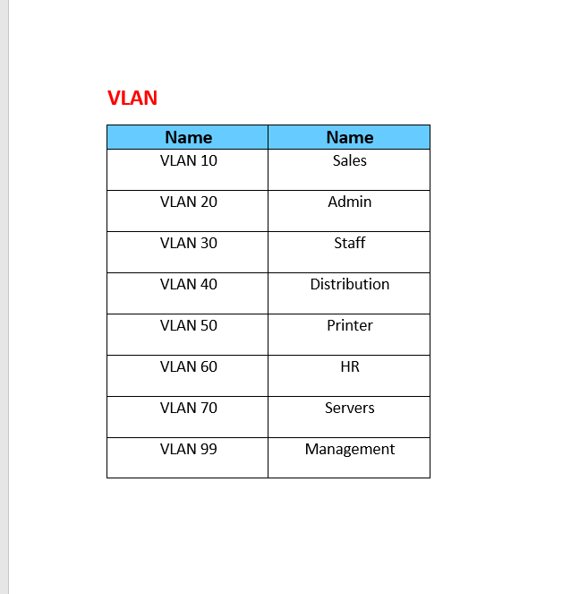
 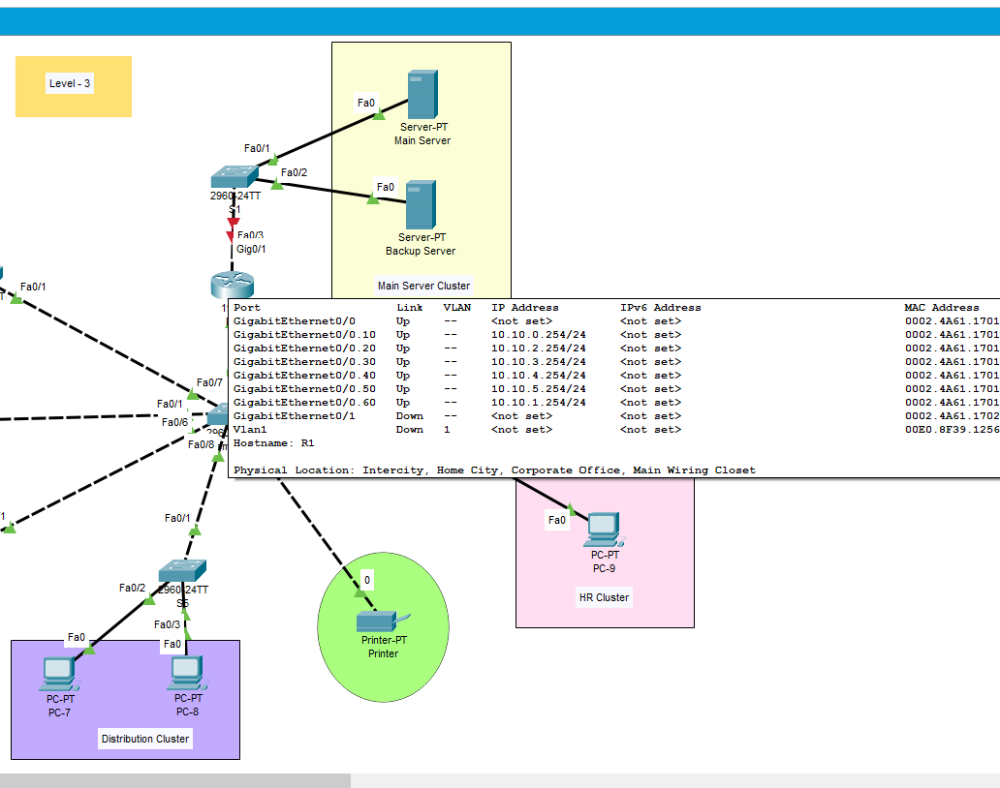
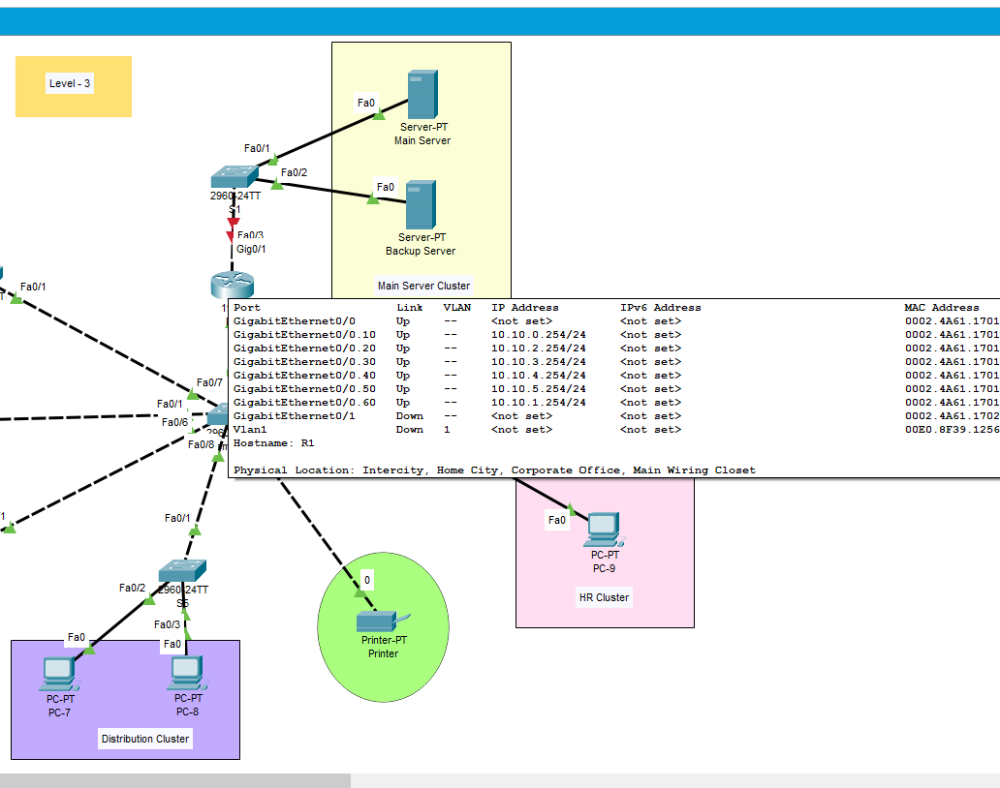
This week we had a two stand up meetings with our group, similar to previous weeks. We continued the rest of the configuration on our network topology Devices. We setup Vlan's for security and reducing broadcast traffic. We also named and set an IP address for each Vlan. Vlan 10 for Sale department, Vlan 20 for Admin cluster, Vlan 30 for Staff/common room, Vlan 40 for Distribution cluster, Vlan 50 for Printer and Vlan 99 for Management.
There was an issue with my portfolio's layout, but with the help of Sabi I was able to fix the problem.
We configured a trunk link between a Cisco router and switches. We had Vlans in a multi switch LAN, therfore, for inter-connections between the switches we configured "Switchport mode trunk" between switches to allowing the routing of traffic between different vlans. For connecting PC's and printers to Switches we used the "switchport mode access".
An issue we faced in this part was that Computers inside VLANs had connectivity with each other, but were not able to reach computers on a different VLAN. For example, PC-4 from Vlan 30 (Staff/common cluster) could successfully ping PC-3 on the same vlan but it couldn't ping to pc-9 which is on Vlan 60 (HR Cluster). As well as this, the printer was not Accessible from all departments.
We assigned Router-on-a-stick on the Router. In this case our Router's interface is divided to six sub-interfaces as there are six different Vlans which act as a default gateway to their respective vlans. We used the following command "encapsulation dot1q vlan_id" to enable 802.1Q trunking and associate each VLAN with the sub-interfaces
I tried trouble shooting the topology during the weekend. I fixed some mistakes on topology and assigned a gateway for printer to enable access from PCs. During class time we did more trouble shooting and decided to remove the IP addresses from all switches as we configured Router-on-a-stick, and we did not need an IP address for switches. This way we could use the IP address of router's sub-interfaces for all PC's gateway, after trouble shooting we could fix the issue, and all PC's from different VLAN can ping to eachother successfully.
For the main and backup server, we assigned vlan 70, named vlan Servers and assigned subnet prefix /29 for the servers. All departments can access each other but none of them can access the server because of security and only management can access the servers. As well as this, we shut down the port G0/1 which is connected to servers via S1 to ensure none of the Pcs can access the servers.
For the last step of our networking project we decided to assign SSH access on router for securing remote connection. Many IT professionals believe that it is not secure to use telnets for managin routers, switches and firewalls (D.Davis.2005,para. 1). Therefore we decided to use standard an alternative to Telnet's which is Secure Shell(SSH). SSH is very benefitial compared to Telnets as it doesn't have may security concerns. The reason for this is that it uses digital certificates and encryption.
We used the following command "crypto key generate rsa" to create the encryption keys for using the authentication and encryption of the SSH data.
This command uses Rivest Shamir Adlemann algorithm to generate the cryptographic keys .
Also, we set the size of the key modulus to 1024. If the size of the key is too high, it will be time consuming and if it is too low it will be very easy to crack therefore,
1024 is a suitable key size.
For the login credentials on the router, we used “useradmin” for the username and “cisco” for the Password. Additionally, we used the following command "IP SSH authentication 3" so the user can
only put an incorrect password 3 times and after that they can not access the router via PC. Authentication timeout has been set to 60 seconds, after 60 second we cannot connect it.
The following website was very helpful to do SSH access.
Enabling SSH on Cisco routers and switches
Configure SSH on your Cisco router
For the final step we tested the connectivity of SSH from PC4 with "ssh -l adminuser 10.10.2.254" command. We tested all devices to make sure they work correctly and checked for connectivity between all PC's in different departments. Also we made sure devices in all departments have access to the printer. Also we tested Servers as well and the main server can connect to the backup server successfully and vice versa. We also assigned cisco for the password, so we could access router from all PC's.The result of testing the sections showed that all of the devices work perfectly.
I put a screenshot of some of the PC's, thats shows connectivity between Pcs to eachother and to printer. The screenshots also show SSH access to router.
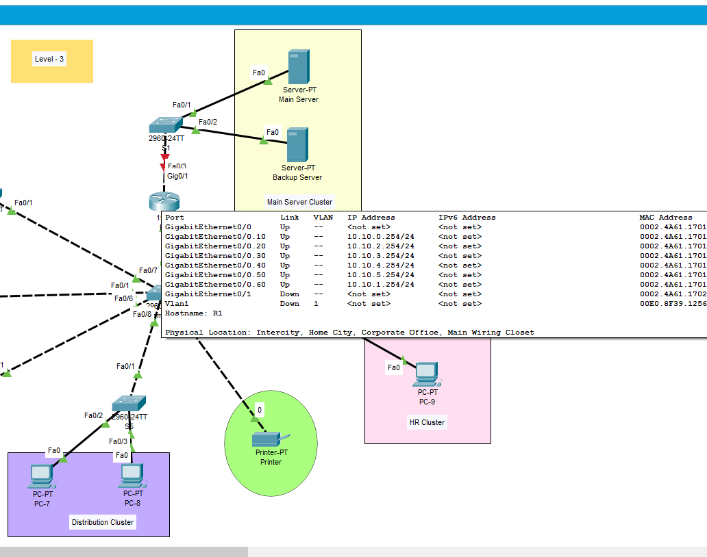
We did the rest of the configuration for devices such as Router onstick, ssh access and management. We also tested all the devices for connectivity between eachother. We finished our second project and this project was very helpful for me because I understood how to do networking from the initial step of planning till the end. I also understood the necessary aspects to pay attention to in networking in order to have a good design for an office. In this project we focused mostly on aspects such as security, scability and affordability.